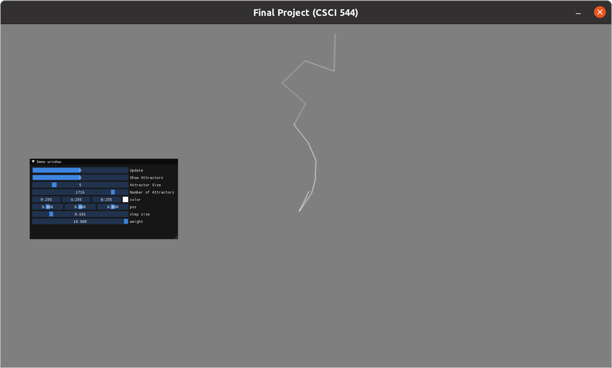

This is a game project written in the Godot game engine for a class in graduate school at Mines.
It's a top-down action game that I wrote with a partner at school.
gameplay (no audio)
A lightning simulation using OpenGL, C++, and ImGUI. The algorithm that drives the creation of the lightning bolt is a space-colonization algorithm
found here.

Here is an example lightning bolt.
This is an implementation of a Unix-style shell that I wrote. It allows the user to run most commands
that they can in a normal bash environment. The smiley face indicates that the command executed
successfully and the frown that it failed.
Here is the program running.
This is an Android app that I wrote in Kotlin. It allows users to create
and review flash cards that they create. It uses a primitive SRS algorithm
to aid in reviewing the cards.
App Demo (no audio)